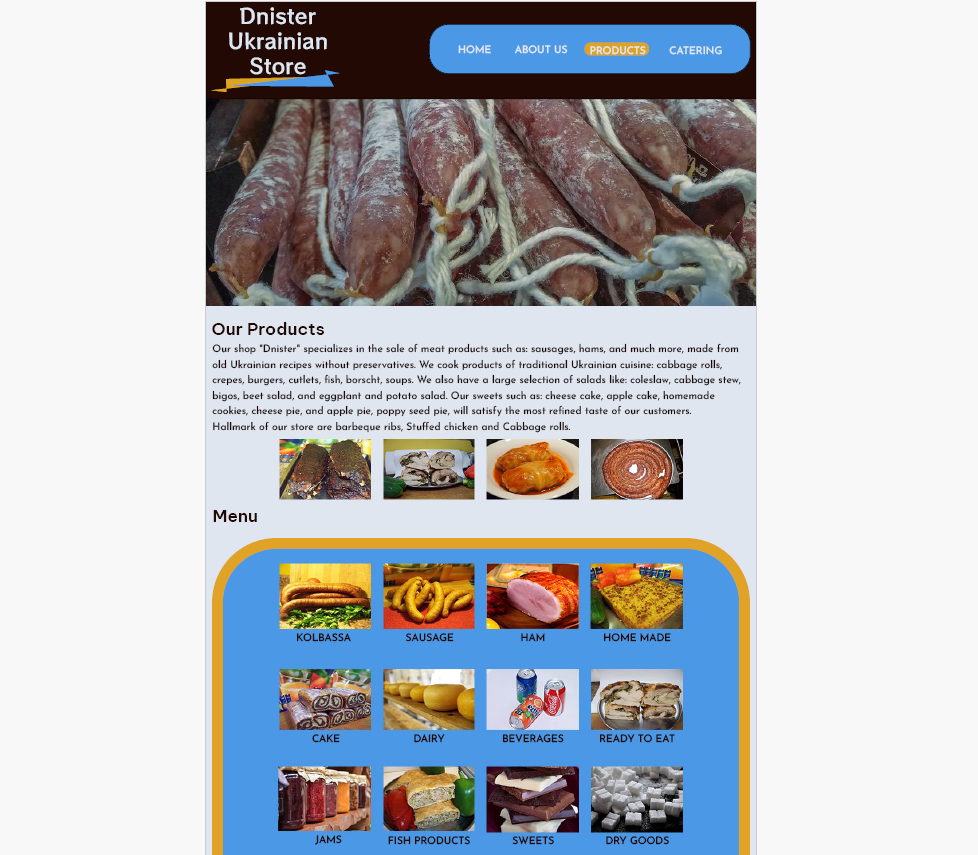

Dnister Website Re-design
The image seen here is a snippet one of the pages included in my wireframe for a project I did in the Web Design and Usability 1 course at NAIT. The purpose of this assignment was to find a website that could use some design updates, re-organize all of the content, create a sitemap, create a mood board to convey the creative direction we were taking, and finally create a high fidelity wireframe for mobile and desktop screens of the new and improved website.
I went with the colors of the Ukrainian flag for the color palette, as the store is a Ukrainian Deli. I re-designed the logo myself and changed the font families along with font colors and line spacing to improve readability. I used Photoshop to make the wireframe, and made sure to utilize a grid to make sure all of the elements were aligned and spaced out correctly. The site I was redesigning had a lot of content that wasn't organized well and I found it quite difficult to navigate, so I made sure that all the pages and the content within each page made sense and would be easy for users to navigate through.
I had a lot of fun with this project, it challenged me to utilize the skills I've obtained in web design to transform an outdated website that lacked design elements, responsiveness and accessibility into a well organized, easy to navigate, aesthetically pleasing site.